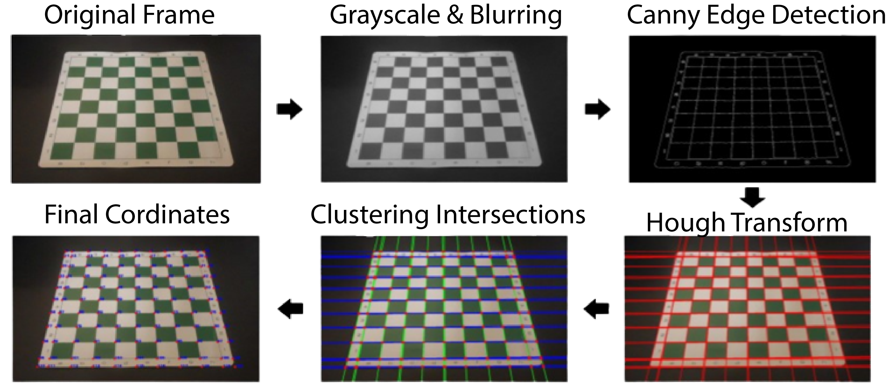

Computer Vision
Qu’est-ce que la Computer Vision ?
La vision par ordinateur (aussi appelée vision artificielle ou vision numérique) est un type d’ingénierie informatique. Elle consiste à apprendre aux ordinateurs à « voir » des images numériques telles que des photos et des vidéos. L'IA est capable de reconnaître une image, de la comprendre, et de traiter les informations qui en découlent. Pour beaucoup, la vision par ordinateur est l’équivalent, en termes d’IA, des yeux humains et de la capacité de notre cerveau à traiter et analyser les images perçues. Pour résumer, la vision artificielle consiste à la reproduction de la vision humaine par des ordinateurs.
Détection :
Ici, l’objectif est de détecter sur une image la position de certains objets. Les objets « à détecter » ont été définis à l’avance, il n’est pas nécessaire d’en détecter d’autres. La présence de ces objets est généralement représentée grossièrement par un rectangle et un nom sur l’image.
Quels sont les domaines d’application de la Computer Vision ?
La Computer Vision est omniprésente dans la technologie d’aujourd’hui. Il est donc impensable d’en faire une liste exhaustive. De plus en plus, ce nombreux domaines et produits se basent sur la computer vision. Que ce soit le secteur automobile ou bien le secteur de la téléphonie en passant par le large secteur de la sécurité, la computer vision nous est devenu indispensable pour notre développement technologique.
La suite de cet article a pour but de donner un aperçu de la grande diversité des domaines où la Computer Vision peut s’appliquer.
Voitures autonomes :
Pour être capable de rouler sans conducteur, les voitures autonomes sont dotées de très nombreux capteurs, dont des caméras. Ces dernières filment l’environnement, notamment les panneaux de signalisation et le marquage au sol.
La question que l’on peut alors se poser est de savoir si ces algorithmes sont suffisamment fiables et performants pour qu’on puisse leur confier d’aussi grandes responsabilités.
Reconnaissance faciale :
Beaucoup de smartphones proposent aujourd’hui d’être déverrouillés par reconnaissance faciale. Les algorithmes utilisés varient en fonction des marques mais ils sont aujourd’hui très performants. De telles méthodes sont aussi utilisées par Facebook, Google Photos ou Snapchat pour reconnaître les visages sur les photos. Suite à la pandémie du Covid19, nombreux sont les algorithmes à avoir été mis en défaut par la présence d’un masque sur le visage des utilisateurs. Aurait-on découvert le talon d’achille de Big Brother ?
Imagerie médicale :
Sans s’être réellement imposée en tant que standard dans ce domaine, la Computer Vision montre des résultats plus que prometteurs dans la détection de maladie. Une équipe de chercheurs du MIT a notamment développé une IA rivalisant avec les médecins pour détecter précocement les cancers du sein en utilisant les mammographies des patients.
Google Maps :
Google utilise les images des panneaux prises par les google cars pour répertorier les noms de rue automatiquement. Le même procédé est appliqué aux panneaux de signalisation, notamment ceux de limitation de vitesse.
Tri des déchets :
Le robot Max-ai détecte et retire certains déchets indésirables en utilisant la Computer Vision. Ce genre de robot pourrait révolutionner la manière dont les déchets sont triés aujourd’hui.
Par exemple, l’entreprise Captricity a développé un algorithme capable de lire et de comprendre des textes écrits à la main, grâce à des méthodes de Computer Vision, et de NLP.
Ressources:
- Freecodecamp
- Programming Knowledge
- Murtaza's Workshop - Robotics and AI
- OpenCV Documentation
- Geeksforgeeks
- JavaPoint
- Medium Articles